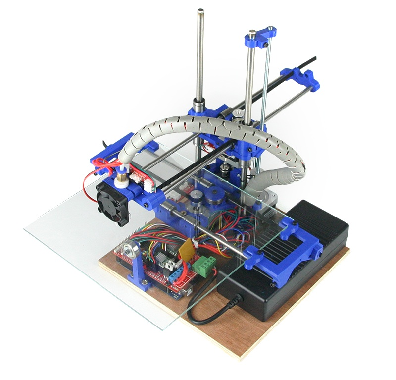

3D Print a 3D Printer!

Need a 3D printer of your own? Consider the RepRap project, consisting of 3D printers where more than 50% of the parts can be made by 3D printers. It does seem a bit time intensive, but if you can get temporary access to a 3D Printer, it might be worth it to some people to then make their own. Personally I would suggest baking cookies for someone in exchange for using their 3D printer. Once you've created one, you can go about printing all that sweet scientific equipment you need!